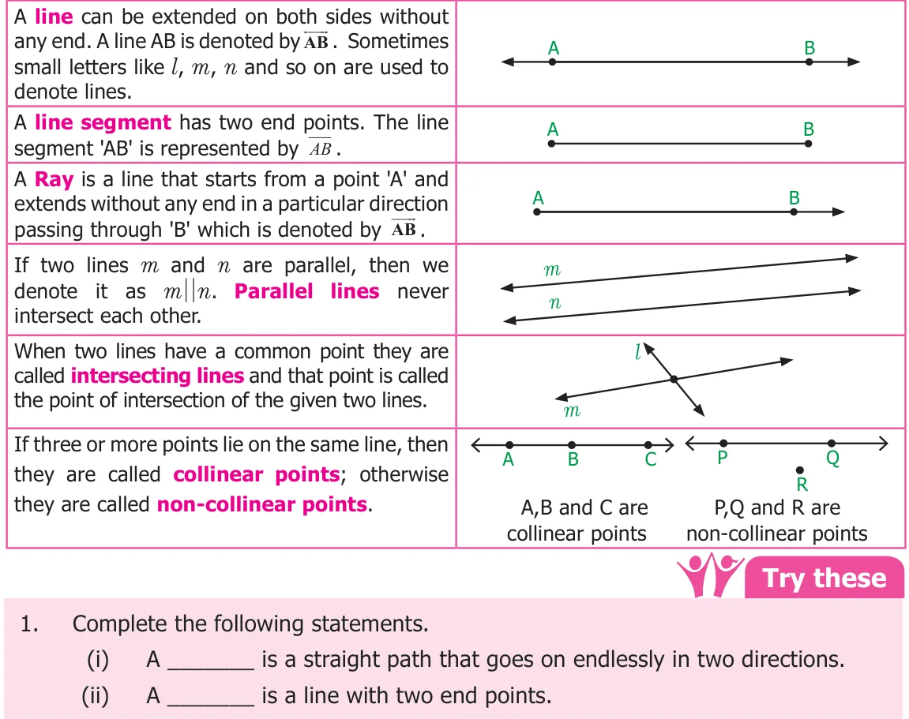
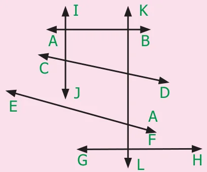
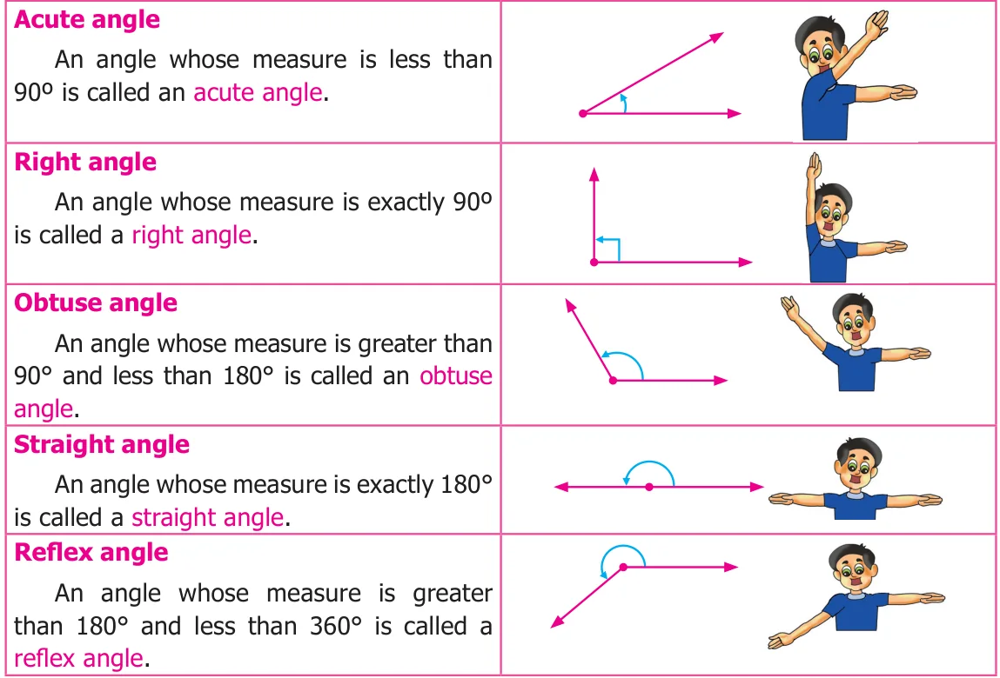
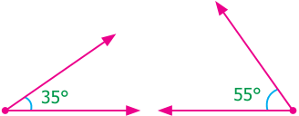
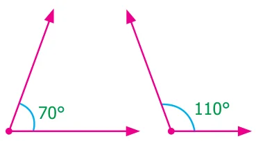

Chapter
5
GEOMETRY
Learning objectives
- To understand about adjacent angles, linear pair and vertically opposite angles.
- To understand transversal.
- To identify the different types of angles formed by a pair of lines with a transversal.
- To construct perpendicular bisector of a given line segment.
- To construct angle bisector of a given angle.
- To construct special angles such as \(30 ^{\circ}\) , \(60 ^{\circ}\) , \(90 ^{\circ}\) and \(120 ^{\circ}\) without using protractor.
Recap
Lines
Let us recall the following concepts on lines and points which we have learnt in class VI.

- A ____ is a straight path that begins at a point and goes on and extends endlessly in the other direction.
- The lines which intersect at right angles are ___________.
- The lines which intersect each other at a point are called ________.
- The lines that never intersect are called __________.
- Use a ruler or straightedge to draw each figure.
(i) line \(CD\) (ii) ray \(AB\) (iii) line segment \(MN\)
- Look at the figure and answer the following questions.

- Which line is parallel to \(AB\)?
- Name a line which intersect \(CD\).
- Name the lines which are perpendicular to \(GH\).
- How many lines are parallel to \(IJ\)?
- Will \(EF\) intersect \(AB\)? Explain.
Angles
Recall that an angle is formed when two rays diverge from a common point. The rays forming an angle are called the arms of the angle and the common point is called the vertex of the angle. You have studied different types of angles, such as acute angle, right angle, obtuse angle, straight angle and reflex angle, in class VI. We can summarize them as follows:

Also, we have studied about related angles such as complementary and supplementary angles in our previous class. Let us recall them.
Complementary angles
Two angles are called Complementary if their sum is \(90^{\circ}\).
Are the two angles given in the figure complementary? Yes. The pair of angles \(35^{\circ}\) and \(55^{\circ}\) are complementary, where the angle \(35^{\circ}\) is said to be the complement of the other angle \(55^{\circ}\) and vice versa.

Supplementary angles
Two angles are called Supplementary if their sum is \(180^{\circ}\).
Observe, the sum of measures of the angles \(70^{\circ}\) and \(110^{\circ}\) given in the figure is \(180^{\circ}\). When two angles are supplementary, each angle is said to be the supplement of the other.

Try these
Choose the correct answer.
- A straight angle measures
(a) \(45^{\circ}\) (b) \(90^{\circ}\) (c) \(180^{\circ}\) (d) \(100^{\circ}\)
- An angle with measure \(128^{\circ}\) is called ____________ angle.
(a) a straight (b) an obtuse (c) an acute (d) Right
- The corner of the A4 paper has
(a) an acute angle (b) a right angle (c) straight (d) an obtuse angle
- If a perpendicular line is bisecting the given line, you would have two
(a) right angles (b) obtuse angles (c) acute angles (d) reflex angles
- An angle that measure \(0^{\circ}\) is called _______.
(a) right angle (b) obtuse angle (c) acute angle (d) zero angle